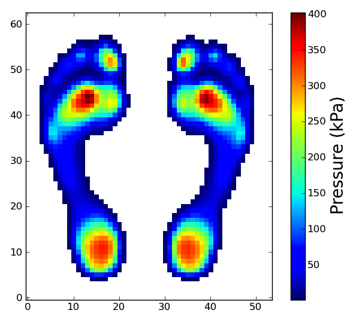

mun104¶
MUN104: Plantar pressure distribution template
Overview¶
These are the MUN104 left- and right- plantar pressure distribution templates, computed from 104 subjects at the University of Münster, Germany.
Recommended uses: as a datum for comparisons with individuals and/or other populations.
Data¶
MUN104.h5.zip(for Matlab, Python, C, etc.)MUN104.csv.zip(for spreadsheet applications like Microsoft Excel)
Reference¶
Pataky TC, Bosch K, Mu T, Keijsers NLW, Segers V, Rosenbaum D, Goulermas JY (2011). An anatomically unbiased foot template for inter-subject plantar pressure evaluation. Gait and Posture 33(3): 418-422.
Loading and viewing the data (MATLAB)¶
>>> file_name = 'MUN104L.h5';
>>> I = hdf5read(file_name, '/I');
>>> I = double( I' );
>>> h = pcolor(I);
>>> set(h, 'facecolor','flat', 'edgecolor','none')
>>> axis image
Loading and viewing the data (Python)¶
>>> import tables
>>> from matplotlib import pyplot
>>> file_name = 'MUN104L.h5'
>>> file_id = tables.openFile(file_name, mode='r')
>>> I = file_id.getNode('/I').read()
>>> file_id.close()
>>> pyplot.imshow(I, origin='lower', interpolation='nearest')
>>> pyplot.show()
Data format¶
HDF5 is an open data format, excellent for the fast reading-and-writing of large datasets. Please find more information at: www.hdfgroup.org/HDF5
LICENSE¶
Copyright (c) 2011 Todd Colin Pataky, Kerstin Bosch, and Dieter Rosenbaum
Permission is hereby granted, free of charge, to any person obtaining a copy of this software and associated documentation files (the “Software”), to deal in the Software without restriction, including without limitation the rights to use, copy, modify, merge, publish, distribute, sublicense, and/or sell copies of the Software, and to permit persons to whom the Software is furnished to do so, subject to the following conditions:
The above copyright notice and this permission notice shall be included in all copies or substantial portions of the Software.
THE SOFTWARE IS PROVIDED “AS IS”, WITHOUT WARRANTY OF ANY KIND, EXPRESS OR IMPLIED, INCLUDING BUT NOT LIMITED TO THE WARRANTIES OF MERCHANTABILITY, FITNESS FOR A PARTICULAR PURPOSE AND NONINFRINGEMENT. IN NO EVENT SHALL THE AUTHORS OR COPYRIGHT HOLDERS BE LIABLE FOR ANY CLAIM, DAMAGES OR OTHER LIABILITY, WHETHER IN AN ACTION OF CONTRACT, TORT OR OTHERWISE, ARISING FROM, OUT OF OR IN CONNECTION WITH THE SOFTWARE OR THE USE OR OTHER DEALINGS IN THE SOFTWARE.

{kind=link}